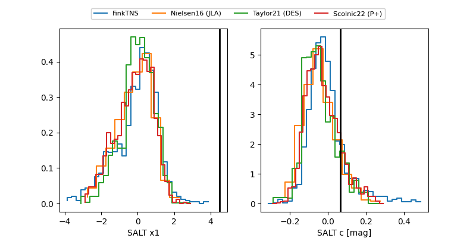

FINK: ZTF25ablgdrp
Lasair: ZTF25ablgdrp
ALeRCE: ZTF25ablgdrp
TNS: 2025vej
YSE: 2025vej
ZTF25ablgdrp (ztf,fink)
2025vej (tns,yse)
ATLAS25kgw (atlas)
equatorial (ra, dec) = (19.7700,-25.60692)
galactic (l, b) = (200.6799,-83.62533)

last atlaso=19.73, ztfg=19.43, ztfr=19.27
1 atlaso, 7 ztfg, 7 ztfr detections